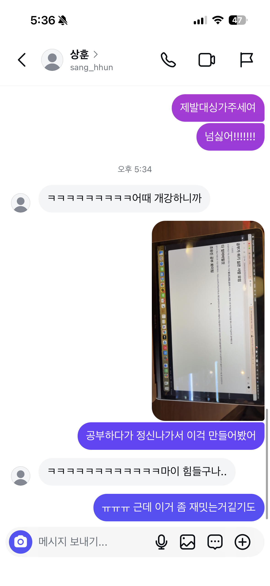
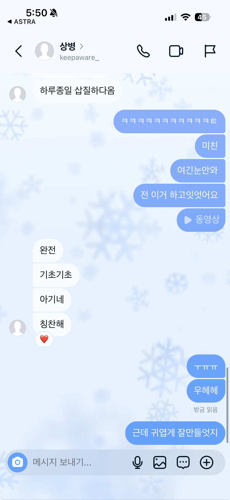

공부가 하기 싫은 사람 모임
- 조유진
안녕하세요 저는 유진이에요 저는 지금 웹프로그래밍 공부를 하고 있는데요, 현재 너무 하기싫고 지금 진도를 계속 나가면 지금까지 공부했던 걸
다 잊어버릴것
같아서 복습 차원으로 이걸 만들어봐요;;
지금 p,/p쓰려고하는데 왜 p는 빨간글씨인데 /p는 입력이 안될까요 좃같네!!!!! 하지만 지피띠니한테 물어볼게요 뭔가 내 생각엔 h가 들어가서? 사실 잘 모르겠어요

위는 양상훈씨 특별출연

여기는정우씨
조유진 공부 화이팅